{{#seo: title=Geiger Counter & Gamma Ray Spectrometry for the iPad - iMetry| titlemode= replace | keywords=geiger counter,gamma ray spectrometry, pocket sized, portable geiger counter, geiger counter surplus, energy compensated geiger counter, spectroscopy, spectrometer, spectroscope, iPad, MPPC, photon counter, pocket sized, geiger counter special price, geiger counter special limited offer,geiger counter discount sale,geiger counter for sale, extra stock discount, Monitoring Post, geiger counter surplus sale, affordable, cheap, low priced, geiger counter extra bargain sale,geiger counter bargain price, high performance, extra performance geiger counter|description=iMetry - Gamma Spectrometry Geiger Counter, Monitoring Post}}
iMetry - Geiger Counter Gamma Spectrometry for the iPads | ||||||||||||||||||||||||||||||||||
iMetry works with all iPads including mini,mini2,3... Air, Air2,3...iMetry is compatible for all versions of iPad including current iPads, iPad minis, except for iPad1 which is no longer supported by Apple. And supports latest version of iOS. | ||||||||||||||||||||||||||||||||||
|
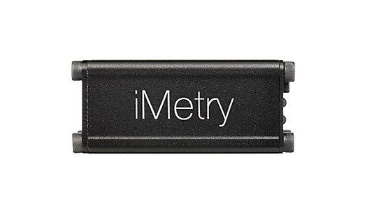 iMetry - Ultra Sensitive Photon Counting Energy Compensated Geiger Counter Gamma Ray Spectrometry (Spectrometer, Spectroscopy) Monitoring Post System for the iPadsiMetry system is MPPC(photon counter) based, extremely sensitive, ultra high performance, pocket-sized mobile gamma ray spectrometry, scintillation Geiger counter, radiation detector system specialized for I-131/Cs-134/Cs-137 survey, using iPad. Its extra ordinal sensitivity and ease of use, will fully satisfy casual radiation measurement needs, and it's one of must have item to survive this age. iMetry is stable, cool, sophisticated, fashionable, affordable and portable and easy to use. You can hold in your bag, or have your own in your bookshelf, and you can prepare for the dooms day. You can check spectrum instantly by yourself. iMetry provides some helps to decide yourself whether if you need to evacuate right now or not. iMetry would also helps you to decide when you can be back. Let's prepare for the future now. You can also leave your outdated iPads ( except for iPad 1 which is not good for continuous operation ) with iMetry using Xively, you can set private monitoring post more precise( lessor drift, putting into stainless jar with styrole to mitigate enhanced heat stability ) than government post, in your home.
To make it work together, iMetry system requires iMetry: the detector module itself, iPad, its special dedicated application: iMetry, and external micro-B USB power supply. | ||||||||||||||||||||||||||||||||||
Energy Compensations have already been supported by the software updatesEnergy Compensations (EC) have been already supported by software updates, it require no hardware change. EC support have been committed from the first release of iMetry just with software updates, no hardware change. This commitment have been achieved. Existing customers and new customer would benefit with this feature, compensating energy, can measure compensated dose rate, based on radiation pulse energy. Why spectrometry feature is essential for Geiger counter?Using Geiger counter, you cannot identify what's the origin of radiation. Using iMetry, you can roughly identify whether if the radiation source is from Cesium or Radon, so easily. You can instantly identify marble based radiation or artificial radiation from Cesium, in the field. Without iMetry, you cannot tell 0.15 μSv/h radiation whether if from marble stone radon or cesium. In case of 0.15 - 0.2 μSv/h (it's regular radiation level of natural marble origin), it takes roughly about 30 minutes to do roughly screening whether if it is from reactor origin cesium or marble, using iMetry spectrometry mode, without extensive expertise. iMetry is the only available energy compensated geiger counter in this price range, and by far more sensitive than any other. You may require extensive inspection for final judgement using Germanium spectrometry, iMetry can only be used for initial rough screening, but much better than simple Geiger counters. iMetry require Ba-133, and Cs-137 calibration source for re-calibration. | ||||||||||||||||||||||||||||||||||
iMetry is roughly 45 times more sensitive than SBM-20 based Geiger counter, but eventually 270-540 times moreiMetry is roughly 45 times more sensitive than SBM-20 based Geiger counter, but more. In view of cpm/μSv/h, sbm-20 is roughly 132. The sensitivity of iMetry is 45 times more sensitive, but if you use iMetry in 1h average mode, its sensitivity is compared with 5-10 minutes averaged SBM-20 based regular Geiger counter system, 540-270 times more sensitive. That's the reason why iMetry can tell so many digits in view of relative radiation level comparison at the same occasion. As for absolute measurement, the measured value is more affected to environmental temperature and iMetry's drift, and calibration condition, its very hard to use precisions, but you can compare at the same moment, measuring several times to check and roughly identify sample specimen difference to control sample, especially in the lead box and geiger counter mode, iMetry outperforms finite resolution. | ||||||||||||||||||||||||||||||||||
Just with 1cm thick lead plate, you can try and review extreme sensitivity of iMetry without bringing any radiation sourceYou can check iMetry's extreme performance just putting on 1cm thick lead plate, without any radiation source. Just put iMetry on the lead plate, you can see significantly lowered radiation level instantly. Could you ever experience such thing with your geiger counter ever before? That's the evidence of the extreme performance of iMetry, iMetry's so many digits are not just a joke, in view of relative radiation level comparison, at the same occasion, at the same temperature, and humidity, (be aware iMetry is extreme sensitive device) at the moment you measure. iMetry without 1cm thick lead plate.(0.05166 micro Sv/h) iMetry with 1cm thick lead plate.(0.03558 micro Sv/h) The difference by existence of a lead plate. (iMetry's resolution of radiation measurement is relative value, absolute resolution is vulnerable to calibration error, and energy compensation error, which iMetry software is not supported current version, we are working on it, and vulnerable to iMetry sensor drift with temperature, humidity, and time. iMetry have temperature compensation circuit, but its not perfect. iMetry, is not magic and vulnerable to physical limitation, but much better than regular geiger counter. So its resolution digit is effective only for repetitive measurement comparison, under the same condition, and same occasion.) | ||||||||||||||||||||||||||||||||||
Monitoring Post feature, using Xively system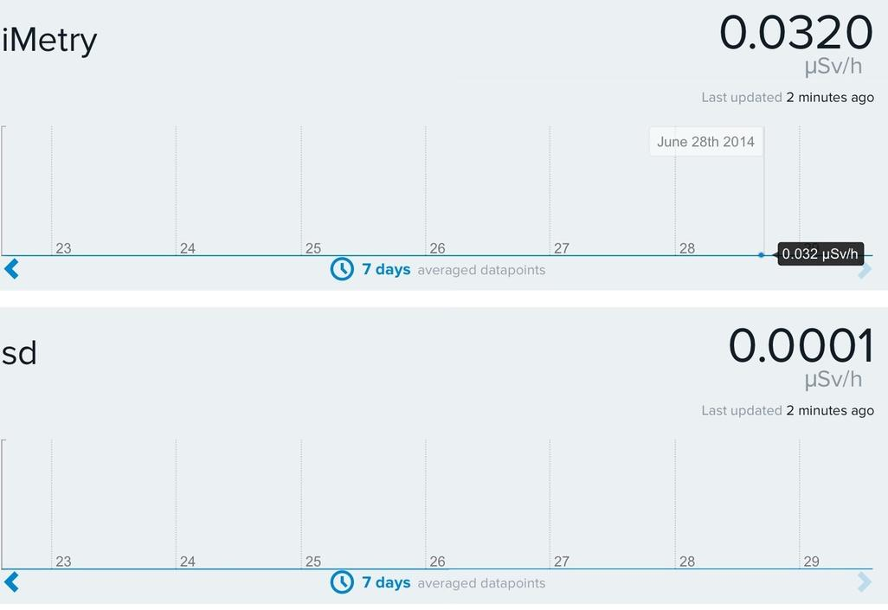
| ||||||||||||||||||||||||||||||||||
You can tell 1 nSv/h difference without lead shielding in the air conditioned room enviroment shielding iMetry with stainless vacuum mini bottleYou can actually tell 1 nSv/h difference in the room, without lead shielding, using iMetry, putting in stainless vacuum minibottle, with stylol, air conditioned, preparing control material and measuring material spending 6 hour each other in case if surrounding background radiation level were steady enough, uncontaminated. | ||||||||||||||||||||||||||||||||||
Good for High-school or Junior High-school Science Education
| ||||||||||||||||||||||||||||||||||
iMetry - Spectrometry(Spectrometer,Spectroscopy) Geiger counter for sale, special limited discount offer price | ||||||||||||||||||||||||||||||||||
iMetry - the iPad Geiger Counter / Spectrometry application
iPad application Language fully supports English, as well as Japanese. So, you do't have to worry with Japanese. | ||||||||||||||||||||||||||||||||||
Other iMetry Geiger Counter / Spectrometry related sites
| ||||||||||||||||||||||||||||||||||
iMetry Geiger Counter / Spectrometry - Brochures
| ||||||||||||||||||||||||||||||||||
iMetry - Geiger counter / Spectrometry OverviewWhen iMetry detects radiation, iMetry outputs analog pulse corresponding to the energy of the radiation. Connect iMetry to headphone/mic mini jack of iPad with included audio cable, start measurement in the iPad application, application will record pulses. As a Geiger counter, measures radiation counts(cpm) and μSv/h meanwhile as a spectrometry compiles radiation energy spectrum. | ||||||||||||||||||||||||||||||||||
Getting startedParameter setting* is required before making use, for the first time. To use iMetry, what you need to do is, just pushing "Start" button. That's it.
First, If the table, like following, contained in the package is set to the app, the only one thing, left to do is to push the "Start" button.
The example of measurement | ||||||||||||||||||||||||||||||||||
Radiation Geiger Counter - Background Measurement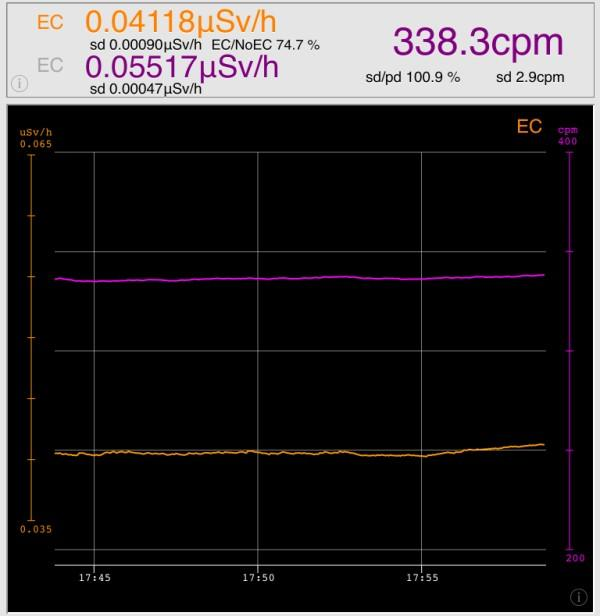
Cs137 Spectrometry (liner scale)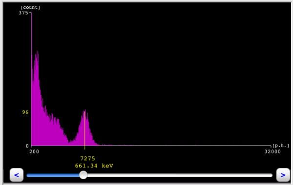
Ba133 Spectrometry (liner scale)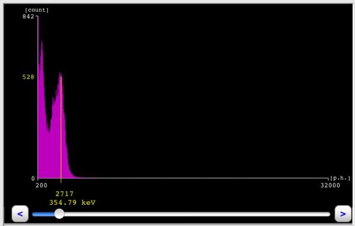
Cs134 & Cs137 Spectrometry (liner scale)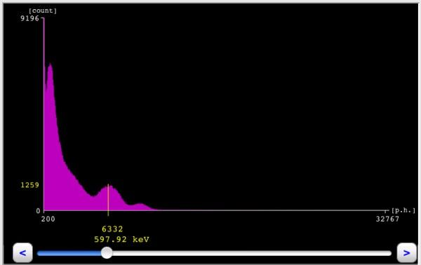
K40 (Potassium) Spectrometry (log scale)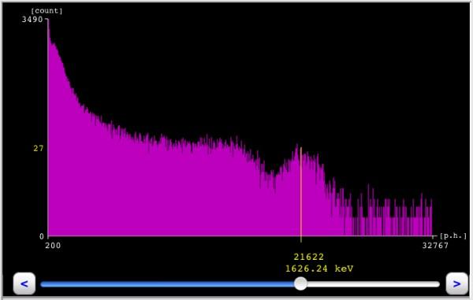
Co60 Spectrometry (liner scale)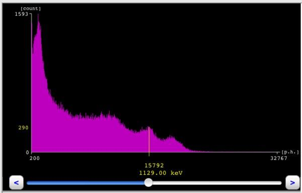
I131 Spectrometry (logscale)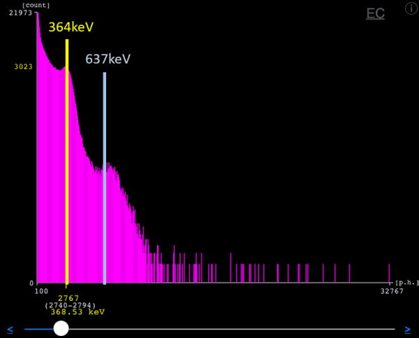
Background Spectrometry inside concrete building (222Rn) (log scale)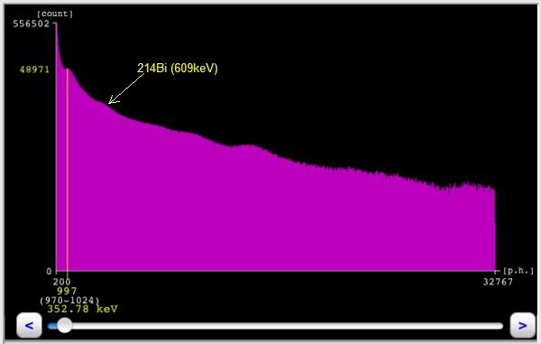
Radiation Geiger Counter inside of a lead box (Thickness:50mm) (Pulse Detection Threshold=100)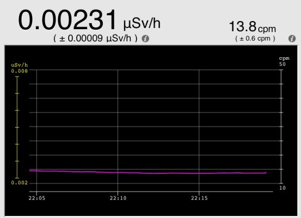
Spectrometry inside of a lead box (Thickness:50mm) (Pulse Detection Threshold=100, log scale)
Radiation Geiger Counter inside of a lead box with copperplate(Thickness: lead block 50mm, copperplate 1mm) (Pulse Detection Threshold=100)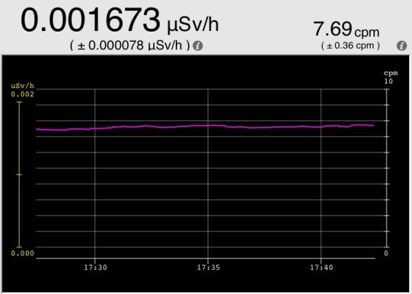
Spectrometry of inside of a lead box with copperplate (Thickness:lead block 50mm, copperplate 1mm) (Pulse Detection Threshold=100, liner scale)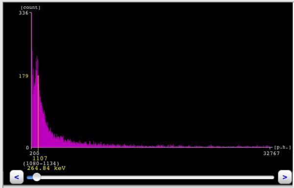
Spectrometry inside of a lead box with copperplate (Thickness: lead block 50mm, copperplate 1mm) (Pulse Detection Threshold=100, log scale)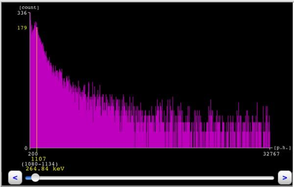
| ||||||||||||||||||||||||||||||||||
iMetry - Spectrometry / Energy Compensated Geiger Counter Specifications (iMR3 A211 OoMER1)
| ||||||||||||||||||||||||||||||||||
Interface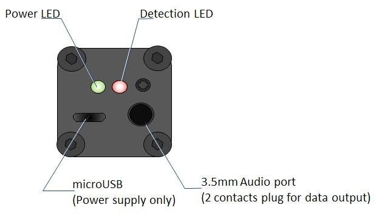
| ||||||||||||||||||||||||||||||||||
Power supplyiMetry works on commonly-used micro-B USB power supplies.
You can use chargers cell phone and smart phone chargers with iMetry, but note for followings.
| ||||||||||||||||||||||||||||||||||
Storage and handling precautions
| ||||||||||||||||||||||||||||||||||
Operating precautions
| ||||||||||||||||||||||||||||||||||
Known problem, issues, errata, issues and errata fixed, improvement and workaround
Waiver
Summary Site
ReferencesPico Tech - Imetry Detector BibliographyGamma Ray Spectrometry, Practical Information - document compiled by Nafaa Reguigui | ||||||||||||||||||||||||||||||||||